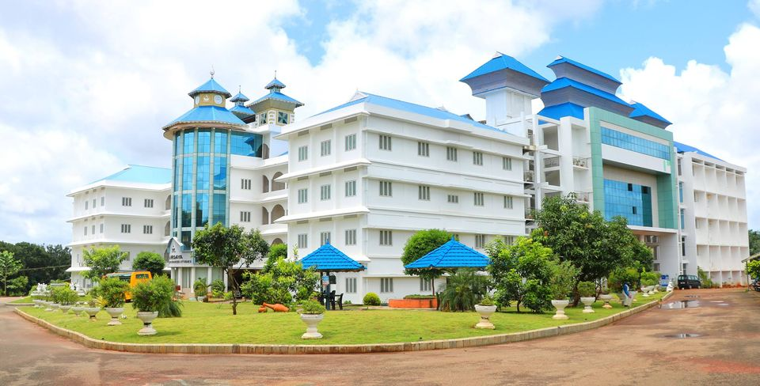

Sahrdaya College of Advanced Studies was formally inaugurated on Saturday 31 December, 2011 by Honourable Chief Minister of Kerala Shri. Oommen Chandy and presided over by Mar Pauly Kannookkadan, the Bishop of the Diocese of Irinjalakuda and Chairman of Sahrdaya Group of Institutions; in the presence of Bishop Mar James Pazhayattil, the Founder Chairman; Shri K. M. Mani, Minister for Finance, Govt. of Kerala; Shri. Thomas Unniyadan, MLA of the Constituency of Irinjalakuda; K.P. Dhanapalan, MP of the Constituency of Chalakudy; Shri B.D. Devassy, MLA of the Constituency of Chalakudy and Msgr. Sebastian Maliekkal, the Vicar General of the Diocese.Know more